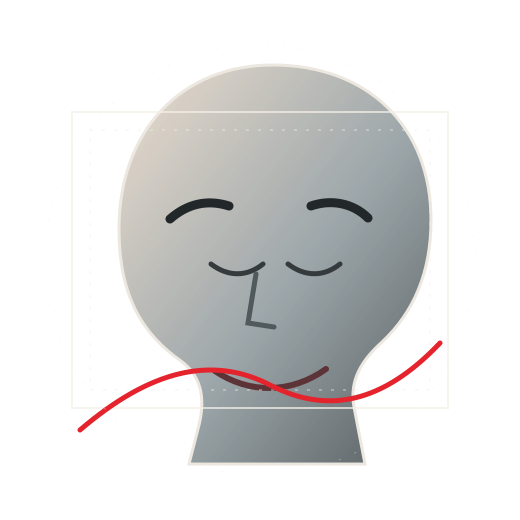

Watch with a question
Start with something you are curious about. It gives the ideas a place to land.
THE REFINED AVERAGE FILM ROOM
Long-form perspectives on the things that shape us — made to be watched, considered and carried into real life.
Open YouTube channel ↗
Some ideas deserve more than a quick scroll.
Refined Average videos explore behaviour, habits, mindset and personal development through structured stories and practical takeaways. As new films are published, this page will become their home.
THE OFFICIAL CHANNEL
Find the latest videos, revisit an idea or discover a new perspective. The library lives on YouTube and grows with every release.
Browse all films ↗Start with something you are curious about. It gives the ideas a place to land.
Not every framework fits every person. Think critically and keep the parts that help.
Give an idea a chance in everyday life. Reflection becomes more valuable when it meets experience.
Don't just collect ideas.
Give the useful ones a life.